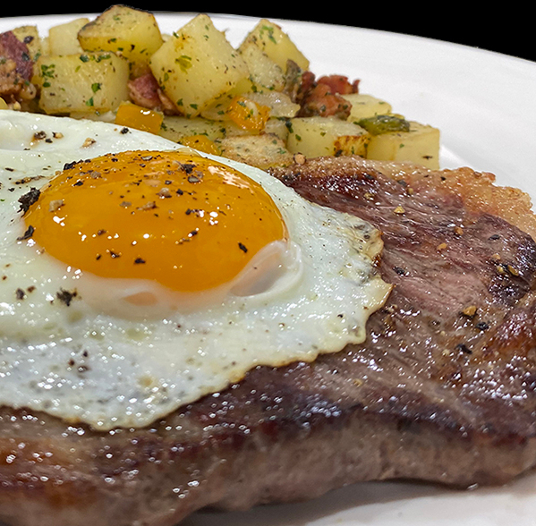

Steak and Egg

Description
The egg yolk drips all over the perfectly cooked steak, which is sure to win you over.
Ingredients
- 2 NY Strip steaks, approximately 6 to 8 ounces per person
- 1 or 2 Eggs per person
- 2 ounces Clarified Butter, Butter or Butter Olive Oil
- 2 to 3 slices Bacon cut into ¼ inches pieces
- 1 large Onion cut into ½ pieces
- 2 large Baking Potatoes cut into medium dice
- ½ cup Bell Pepper any color you have, diced (optional)
- 1 teaspoon Garlic chopped, optional
- 1 teaspoon Parsley chopped, optional
- Salt and Pepper to taste
Instructions
- If you have the time salt your steak on both sides and let them rest at least one hour on a drying rack inside the fridge. Better yet overnight but they MUST be on a rack.
- In a frying pan heat the clarified butter, when hot add the bacon and cook for a few minutes at low heat to render the fat without burning the lean part of the bacon. When the fat is melted add the onion and caramelized until light golden brown at medium high heat. This could take at least a few minutes. Add salt and pepper. When the onion are light golden brown, add the potatoes, bell peppers, salt and pepper to taste cover and reduce heat to medium and cook 8 to 10 minutes. Or until the potatoes are tender. After 8 minutes take cover off and continue to cook to eliminate extra moisture.
- Sauté the Steak: The chef uses avocado oil or clarifies butter. When hot, add the steak and cook on each side approximately 3 minutes depending on the thickness. For rare to medium rare cook to 120/125ºF of course lounger if you like it more cook.
- Cook the Eggs: ON A MEDIUM HEAT Add whole butter in a non-stick frying pan and heat to 250/275ºF. Crack your egg in a small glass bowl and carefully add it in the middle of your frying pan. Add salt and pepper and cover the egg for about 3 minutes.
- Serve with the steak on one side of the plate, and the potatoes next to it. Top the steak with the egg and season with salt and pepper.
Recipe source